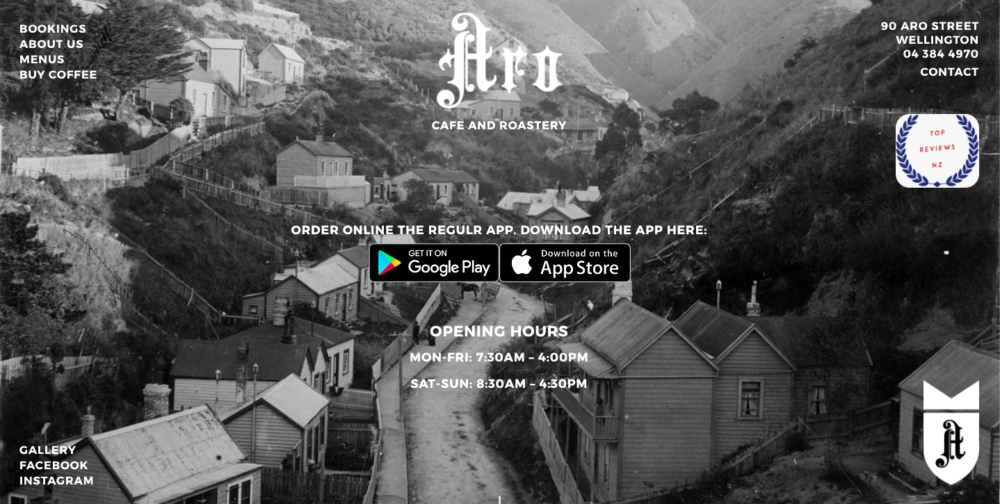
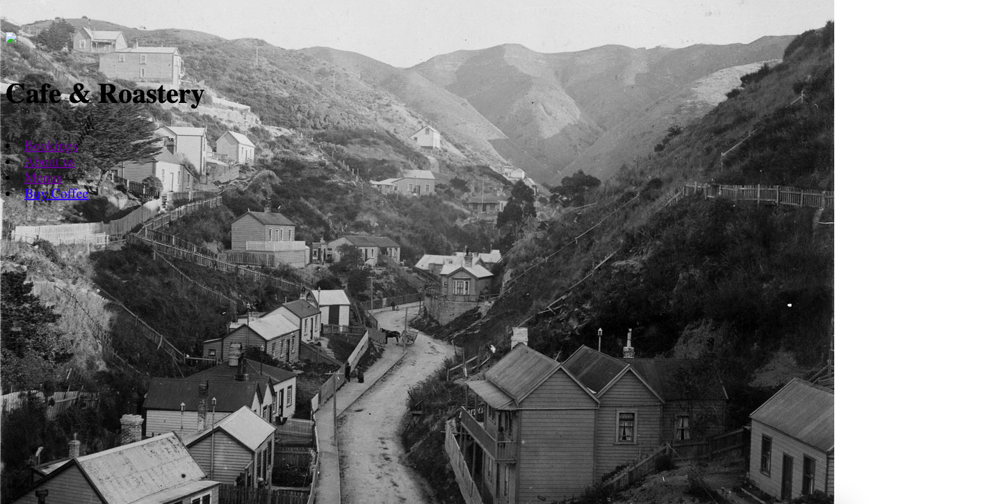
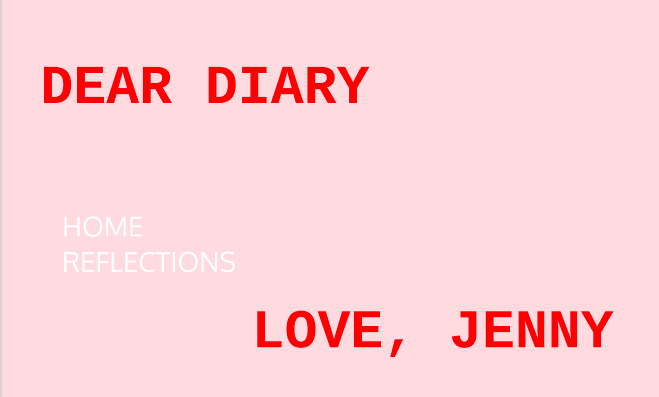
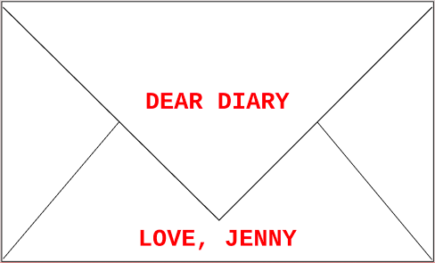
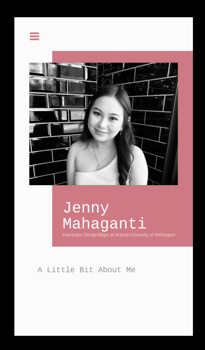
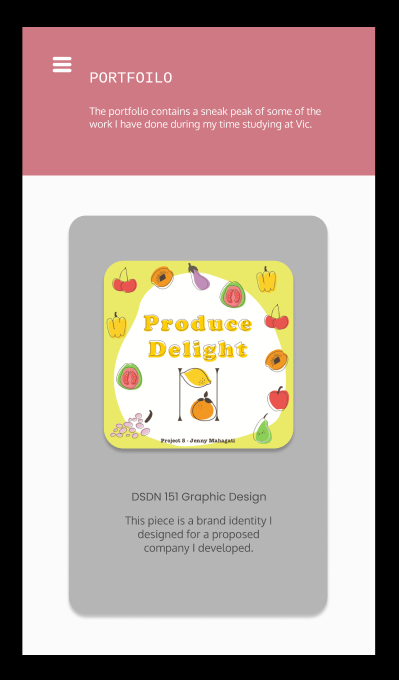
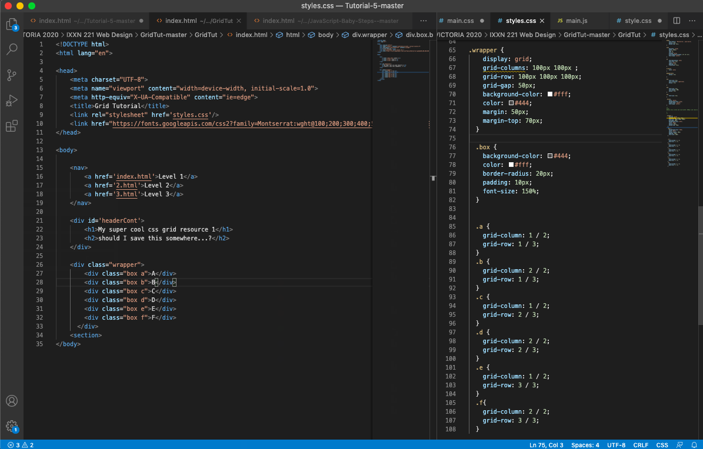
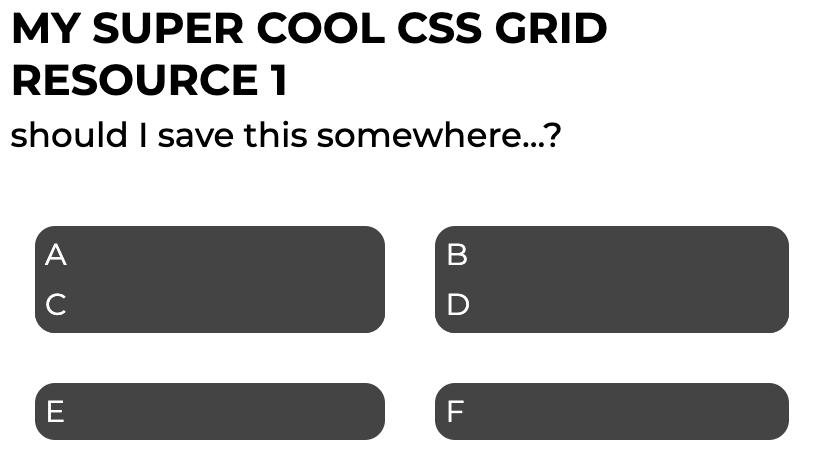

.01 / HTML & CSS


For our first task we got thrown into the deep end and had to code an existing website from scratch. Where the original website is on the left and mine was on the right. Let me say just say.... There was nothing identical between the original website to mine.
.02 / BLOG


The first thing I thought of when I heard that were going to design a blog any way we liked, I instantly knew that I wanted to include my favourite colour.... PINK!!!
For the first iterations of my blog design I wanted to incorperate an additional page which is the home page of my website that navigates you to go between the home and reflection page.
.03 / BLOG BUT MOBILE VERSION


I had a play around on figma and basically this is the mobile version of my blog.
.04 / GRID

